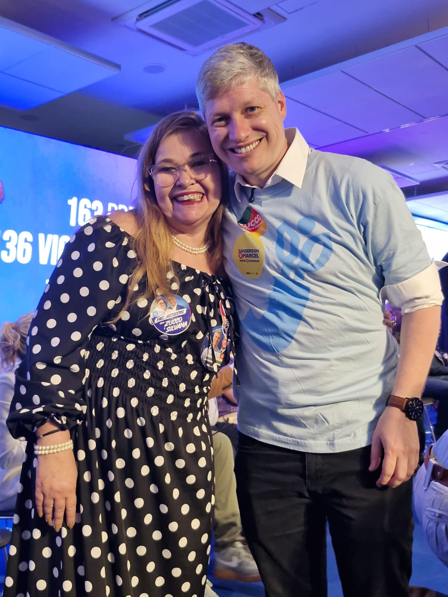
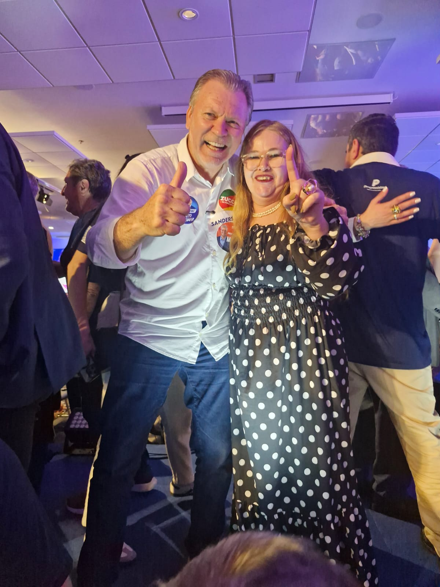
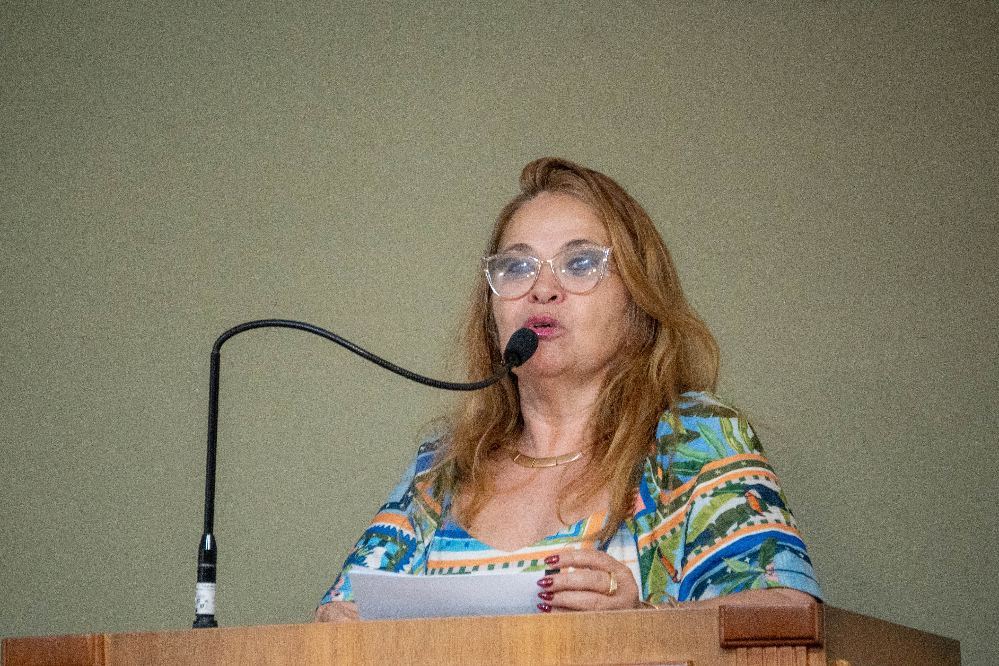
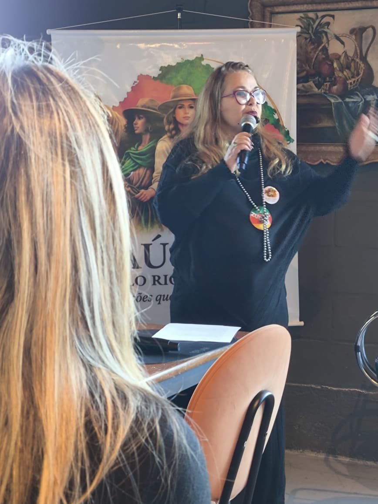
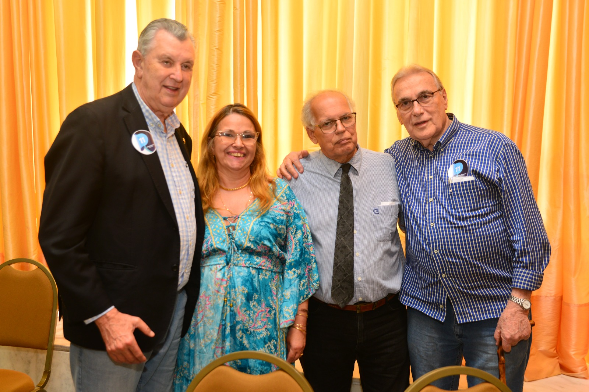

Pelo envelhecimento saudáveldo Rio Grande do Sul
Nasceu em Pelotas e, aos 3 anos, foi morar em Cachoeirinha (Grande POA), numa fazenda estação experimental do IRGA onde o pai trabalhava, enquanto a mãe dava aula na Escola Agrícola CADOP ao lado.
Cursou o final do primeiro grau e o Magistério, e entrou na Invernada Tiro de Laço do Colégio.
Integrou a Invernada Artística do CTG Sinuelo do Sul, do Colégio Pelotense, a convite — e lá foi primeira prenda.
Voltou a estudar na antiga ETFPel, no curso noturno de Edificações, e trabalhava como professora nas Escolas do Cerro do Estado e Elberto Madruga.
Aprovada em concurso para o Curso de Desenho Industrial. Fez Especialização em Educação (UCPel) e Mestrado em Memória e Patrimônio (UFPel).
Na ETFPel, hoje IFSul Campus Pelotas, responsável pela parte de materiais, patrimônio e área física, além de lecionar diversas disciplinas ao longo dos anos.
Aposentou-se e foi em busca de voluntariado: atuou no Conselho Municipal da Pessoa Idosa de Pelotas e é integrante do Rotary Club de Pelotas e do Grupo de Escoteiros Itapuã – 98 RS, do IFSul.
Há dois anos participa da organização e é palestrante nos eventos do Fórum e paralelos. Filha de um guerreiro de 83 anos, defende a causa do idoso — muitas vezes invisível — e pretende atuar também pelos produtores rurais, pelas mulheres e pela educação.





Toque em cada tema para abrir. Substitua pelos compromissos reais da campanha.
[ Texto sobre o fomento à economia grisalha — geração de renda e oportunidades para a população idosa. ]
[ Texto sobre a defesa dos direitos e da renda dos aposentados. ]
[ Texto sobre programas e espaços voltados à melhor idade. ]
[ Estatísticas sobre a população idosa do Rio Grande do Sul que embasam a proposta. ]
[ Texto sobre a experiência docente aplicada à educação e formação continuada do idoso. ]
[ Texto sobre o atendimento ao idoso na zona rural do Rio Grande do Sul. ]